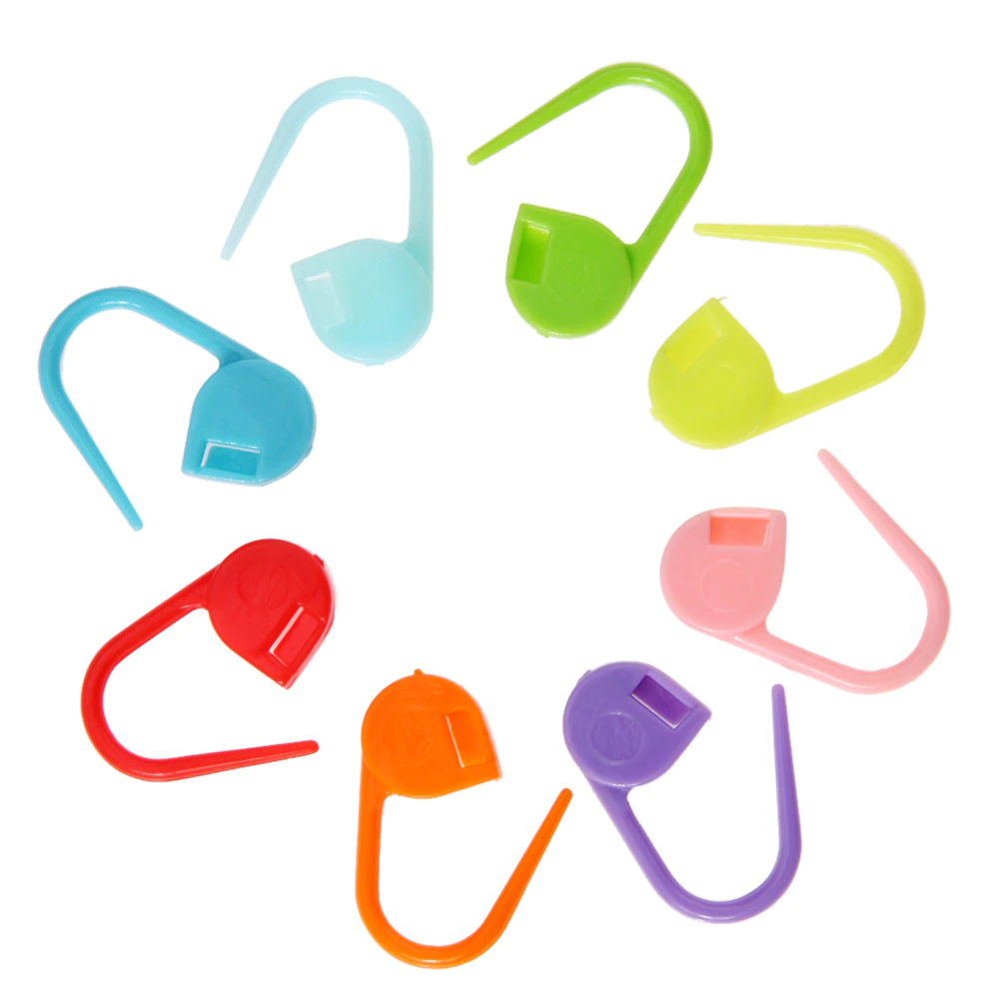

الخطوة الأولى
عليكي صديقتي المبدعة اقتناء الأدوات اللازمة لبدء مشروع الكروشيه الخاص
بكِ


و من أهم تلك الأدوات:
- بكرة خيط
- ابرة كروشيه مناسبة لسمك الخيط
- ابرة تنظيف
- محدد للغرز
بكرة خيط
ابر كروشيه
ابر تنظيف
